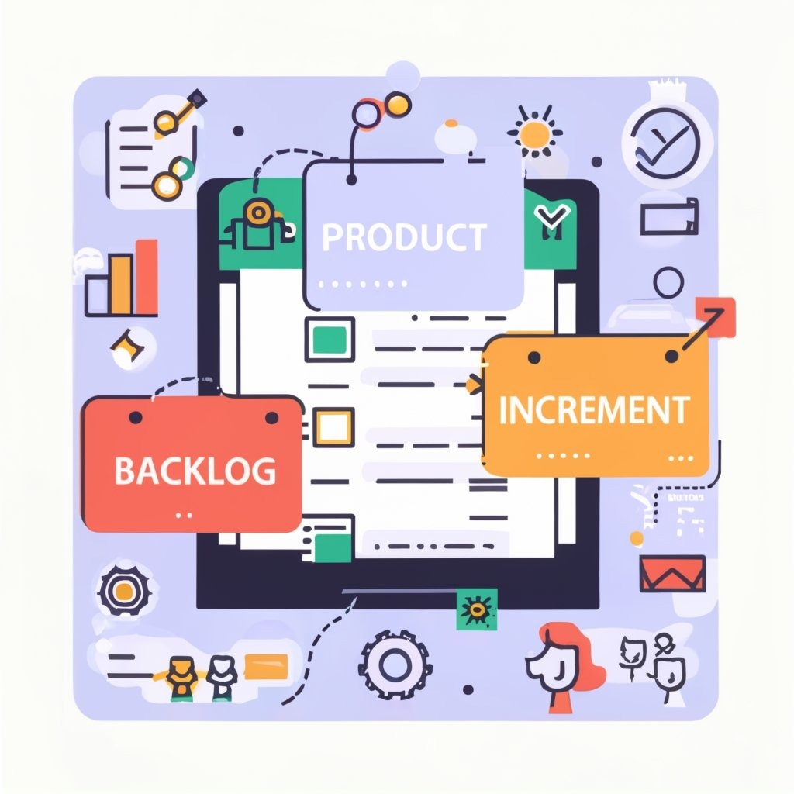

Artefatos e Transparência Scrum Scrum
Artefatos Scrum
Os artefatos do Scrum são representações tangíveis do trabalho ou valor, destinados a proporcionar
transparência
e
oportunidades para inspeção e adaptação. São projetados para garantir um entendimento comum entre todos
os
membros do Time Scrum.
Três pilares apoiam a implementação de controle de processo empírico: transparência,
inspeção e adaptação.
Backlog do Produto
O Backlog do Produto é uma lista dinâmica e ordenada de todas as necessidades do produto,
sendo a única fonte de requisitos para alterações no produto. O Product Owner é responsável por seu
conteúdo,
disponibilidade e ordenação. Este backlog evolui continuamente, acompanhando as mudanças no produto, no
ambiente
e nos requisitos de negócios. Ele abrange características, funções, requisitos, melhorias e correções.

Atributos do Backlog do Produto:
Descrição: Detalhes sobre cada item.
Ordem: Classificação baseada na prioridade.
Estimativa: Avaliação do esforço necessário.
Valor: Importância relativa para o produto.
Refinamento do Backlog do Produto
O refinamento é o processo contínuo de adição de detalhes, estimativas e ordem aos itens do Backlog do
Produto.
O Product Owner e o Time de Desenvolvimento colaboram para aprimorar os itens, mantendo os de alta
prioridade
mais
detalhados. Este processo não consome mais de 10% da capacidade do Time de Desenvolvimento.
Revisão da Sprint
Durante a Sprint, o total do trabalho restante é monitorado.
Atualizações contínuas refletem mudanças no progresso.
Somente o Time de Desenvolvimento altera o Backlog da Sprint.
Incremento
O incremento é a soma de todos os itens do Backlog do Produto completados durante a Sprint e os
incrementos
anteriores.
Deve estar "Pronto" ao final da Sprint, independentemente de ser liberado.
Transparência dos Artefatos
Transparência é essencial para fundamentar decisões. O Scrum Master trabalha para garantir que os
artefatos
sejam
totalmente transparentes, utilizando práticas para lidar com transparência incompleta. A Definição de
"Pronto" é
crucial
para garantir um entendimento compartilhado sobre o trabalho concluído.
Definição de "Pronto"
A Definição de "Pronto" é o critério que determina quando um item do Backlog do Produto ou um incremento
está
completo.
Varia entre os Times Scrum, mas é crucial para garantir a transparência. Times Scrum maduros expandem
sua
Definição de
"Pronto" para incluir critérios rigorosos de alta qualidade.